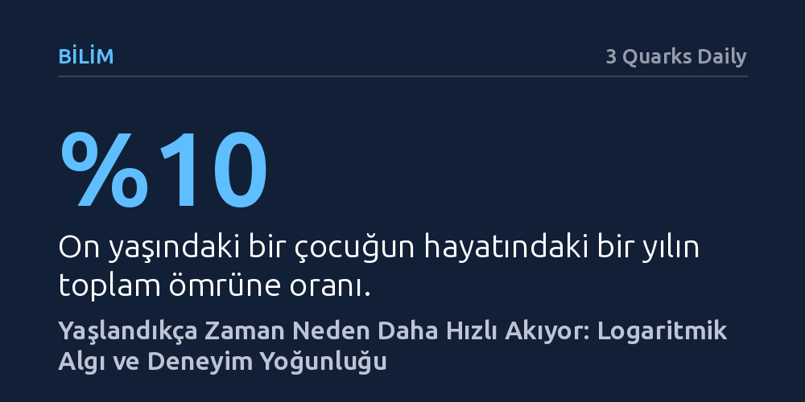

BILIM · 3 Quarks Daily · 2026-09-09
Zamanın yaşlandıkça hızlandığı hissi, her yeni yılın toplam ömre oranının küçülmesinden ve azalan zihinsel yeniliklerden kaynaklanıyor. Logaritmik algı modeli, çocukluktaki bir yılın zihinde çok daha geniş, yetişkinlikteki bir yılın ise çok daha sönük işlendiğini gösteriyor.
Zamanın akış hızındaki değişimin kaçınılmaz bir yanılsama değil, zihnin yaşam süresini oranlama ve yeni deneyimleri kaydetme biçiminin matematiksel bir sonucu olduğunu fark ettirir.

Çocukken bitmek bilmeyen yaz tatillerinin ve bir sonraki yaş gününü beklemenin yarattığı o engin zaman hissi, yetişkinliğe adım atıldığında yerini birdenbire hızlanan takvimlere bırakır. Günler ve yıllar aynı fiziksel süreyle akıp gitse de zihnimizin zamanı tartma biçimi yaş aldıkça köklü bir dönüşüm geçirir. Bilim insanları ve düşünürler, 19. yüzyılın sonlarından bu yana insanların deneyimlediği bu bariz algı kaymasını anlamlandırmaya çalışıyor.
Bu konudaki ilk somut kuramsal temellerden biri, 1890'larda Fransız filozof Paul Janet tarafından ortaya atıldı. Janet, insan beyninin zamanı mutlak bir kronometre gibi doğrusal değil, geride bıraktığı toplam yaşam süresiyle orantılı olarak tarttığını ileri sürdü. Bu yaklaşıma göre, hissettiğimiz zamanın akış hızı tamamen o güne kadar biriktirdiğimiz ömrün büyüklüğüne bağlı olarak şekilleniyor.
Janet'in "yaşanan zaman" ya da literatürdeki adıyla "logaritmik zaman algısı" kuramı, bu durumu basit ama çarpıcı bir matematiksel oranla açıklar. Henüz on yaşındaki bir çocuk için bir yıllık süre, o güne kadar gördüğü tüm yaşamın yüzde onluk devasa bir dilimini oluşturur. Dolayısıyla çocuk zihni bu süreyi çok daha yoğun, yavaş ve ayrıntılarıyla canlı bir şekilde işler.
Buna karşılık elli yaşına gelmiş bir yetişkin için aynı bir yıllık zaman dilimi, toplam ömrün yalnızca yüzde ikisine karşılık gelir. Yaşamın bütünü içerisindeki payı böylesine ufalan bir yıl, zihinde eski ağırlığını ve derinliğini koruyamaz; çok daha uçucu, sıradan ve hızlı geçen bir dönem olarak algılanır. Zamanın yaşlandıkça ivme kazanması, logaritmik ölçekte her yeni birimin bütüne oranla giderek küçülmesinin doğal bir sonucudur.
Janet'in bıraktığı yerden konuyu devralan öncü psikolog William James, meseleyi bilişsel deneyimlerin zenginliği üzerinden derinleştirdi. James'e göre genç insanlar her gün kendilerini yepyeni olayların, ilk kez tadılan hislerin ve taze deneyimlerin ortasına fırlatır. James, bu döneme ait anıların yoğun ve ilginç bir seyahatte geçirilen zamana benzediğini vurgulayarak bu zihinsel durumu şöyle betimler: “Kavrayış canlı, akılda tutma güçlüdür; anılarımız girift ve uzun uzadıya yaşanmış görünür.”
Yetişkinlikte ise her günün benzer rutinlerle geçmesi, zihne kaydedilecek taze veri miktarını azaltır. Yeni uyaranların eksikliği, geriye dönüp bakıldığında zihnin yılları birbirine eklenmiş tekdüze ve kısa bloklar halinde hatırlamasına yol açar. Buradan çıkan en önemli sonuç, zamanın hızını yavaşlatmanın ve yılları yeniden zengin kılmanın yolunun zihni rutinlerden koparıp taze keşiflere ve yeni deneyimlere açmaktan geçtiğidir.